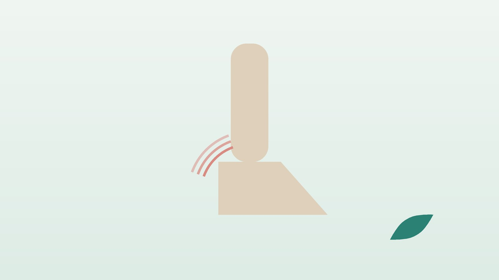

건강 칼럼 · 인천 발목 불안정성 한의원
발목을 자꾸 삐끗한다면, 발목 불안정성 한방 관리

내 발목, 불안정해진 걸까요?
- 지난 1년 사이 같은 쪽 발목을 두 번 이상 삐었다
- 내리막이나 계단을 내려갈 때 발목이 '휘청' 하며 빠질 것 같다
- 눈을 감고 한 발로 서면 다친 쪽이 훨씬 빨리 흔들린다
- 오래 걷거나 서 있으면 바깥 복사뼈 앞쪽이 시큰하고 붓는다
- 굽 있는 신발이나 등산을 할 때 발목에 테이프를 감아야 마음이 놓인다
- 삐고 나서 깁스나 재활 없이 그냥 지나간 적이 있다
이 체크리스트는 진단 도구가 아닙니다. 삔 지 얼마 안 되어 많이 붓고 걷기 힘들다면 영상 검사를 먼저 받으세요.
발목은 왜 자꾸 삐게 될까요?
발목을 안으로 꺾으며 삐면 바깥 복사뼈 앞의 앞목말종아리인대(전거비인대)가 가장 먼저 다치고, 더 크게 꺾이면 아래쪽 발꿈치종아리인대까지 손상됩니다. 국제발목컨소시엄(2014)은 처음 크게 삔 뒤 1년 넘게 발목이 꺾이는 느낌이나 반복 염좌가 이어지는 경우를 만성 발목 불안정성으로 정리했습니다.
- 기계적 불안정: 인대가 늘어나거나 끊어져 발목뼈가 실제로 앞이나 옆으로 더 밀리는 상태입니다.
- 기능적 불안정: 인대는 비교적 괜찮은데 발목의 위치 감각과 반사가 느려져, 순간적으로 버티지 못하고 꺾이는 상태입니다.
- 악순환: 다시 삘 때마다 인대와 감각이 조금씩 더 약해지고, 발목을 쓰지 않으려다 종아리 근력까지 떨어집니다.
정형외과 영상 검사가 먼저인 경우
- 삔 직후 네 걸음 이상 체중을 싣고 걷지 못한다
- 복사뼈 뒤쪽 끝이나 발 바깥쪽 가운데 튀어나온 뼈(다섯째 발허리뼈 뿌리)를 누르면 심하게 아프다
- '뚝' 소리와 함께 크게 붓고 멍이 발바닥까지 번졌다
- 발목이 눈에 띄게 틀어져 있거나 발가락이 저리고 차갑다
- 몇 달이 지나도 발목 안쪽 깊은 곳이 아프고 걸리는 느낌이 있다 (연골 손상 의심)
이런 경우 골절이나 인대 완전 파열, 발목 관절 연골 손상이 있을 수 있어 정형외과에서 X선·초음파·MRI로 확인하세요. 비수술 관리를 충분히 했는데도 계속 빠진다면 인대 재건 수술을 상의할 수 있습니다.
한의학은 반복되는 발목 염좌를 어떻게 보나요?
한의학에서는 삐고 접질린 손상을 염좌(捻挫)나 근상(筋傷)으로, 다친 뒤 남아 시큰거리고 힘이 없는 상태를 오래된 근상으로 봅니다. 『황제내경 소문』 오장생성편의 '족수혈이능보(足受血而能步)', 곧 발이 혈을 받아야 걸을 수 있다는 말처럼 발목의 힘과 감각은 기혈의 뒷받침이 필요하다고 여겼습니다.
다친 자리에 어혈이 남아 붓고 시큰한지, 습한 기운이 고여 무거운지, 근을 주관하는 간과 뼈를 주관하는 신이 약해 버티는 힘이 모자란지를 나누어 치료 방향을 정합니다.
나의 약한 발목은 어떤 유형일까?
골절과 큰 인대 파열이 배제된 뒤 함께 쓰는 한의학적 구분입니다.
1. 어혈정체(瘀血停滯) 다친 자리가 남은 유형
- 이런 분에게 많아요
- 최근 몇 달 안에 다시 삔 분
- 나타나는 모습
- 바깥 복사뼈 앞이 붓고 누르면 아프다
- 함께 오는 몸의 신호
- 저녁에 붓기가 늘고 멍 자국이 늦게 빠짐
- 진찰에서 보이는 모습
- 혀에 어두운 점, 압통이 한 자리에 뚜렷함
- 치료 방향
- 남은 어혈을 풀어 붓기와 통증을 줄이는 방향 (도홍사물탕 계열)
- 오늘부터 해 볼 것
- 다리를 심장보다 높게 올리고 15분 쉬어 주세요.
2. 습체(濕滯) 무겁게 붓는 유형
- 이런 분에게 많아요
- 오래 서서 일하거나 체중이 늘어난 분
- 나타나는 모습
- 발목이 둔하고 무겁게 부으며 비 오는 날 더하다
- 함께 오는 몸의 신호
- 몸이 무거움, 소변이 시원치 않음
- 진찰에서 보이는 모습
- 혀가 두툼하고 백태가 낌
- 치료 방향
- 습을 빼 붓기를 가라앉히는 방향 (방기황기탕 계열)
- 오늘부터 해 볼 것
- 짠 음식을 줄이고 종아리를 주물러 올려 주세요.
3. 간신부족(肝腎不足) 버티는 힘이 약한 유형
- 이런 분에게 많아요
- 중년 이후이거나 여러 해 반복해 삔 분
- 나타나는 모습
- 통증은 덜한데 발목이 헐겁고 쉽게 꺾인다
- 함께 오는 몸의 신호
- 무릎·허리가 함께 시큰하고 쉽게 지침
- 진찰에서 보이는 모습
- 맥이 가늘고 종아리 근육이 얇음
- 치료 방향
- 간신을 보해 힘줄과 뼈를 기르는 방향 (독활기생탕 계열)
- 오늘부터 해 볼 것
- 식탁을 잡고 한 발 서기를 30초씩 해 보세요.
한의원에서는 어떻게 진찰하나요?
- 삔 이력: 처음 다친 시기, 반복 횟수, 깁스나 재활을 했는지 여쭙습니다.
- 인대 흔들림 검사: 발뒤꿈치를 잡고 앞으로 당겨 보거나 발을 안으로 기울여 양쪽 차이를 봅니다.
- 균형 검사: 한 발 서기를 눈 뜨고 감고 비교해 감각과 균형 반응을 확인합니다.
- 초음파: 인대가 두꺼워졌는지, 얇게 늘어났는지, 관절 앞에 물이 찼는지 확인하고 파열이 크면 MRI를 권합니다.
침·약침·추나·한약 치료는 어떻게 하나요?
1. 침 치료
- 구허(丘墟): 바깥 복사뼈 앞아래쪽의 오목한 곳으로, 전거비인대 자리와 가깝습니다.
- 신맥(申脈): 바깥 복사뼈 바로 아래 오목한 곳입니다.
- 해계(解溪): 발등과 정강이가 만나는 발목 앞 주름 한가운데, 두 힘줄 사이입니다.
- 양릉천(陽陵泉): 무릎 바깥 아래 종아리뼈 머리 앞아래쪽의 오목한 곳으로, 힘줄을 다스릴 때 씁니다.
침을 둔 채 발목을 천천히 위아래로 움직이게 하기도 하며, 붓기가 빠진 뒤 시큰한 발목에는 온열 요법을 시행합니다.
2. 약침·초음파 가이드 약침과 추나 요법
약침은 일반 약침과 초음파 가이드 약침을 모두 시행하며, 아픈 부위의 깊이와 주변 구조에 따라 진찰 후 골라 씁니다. 초음파 가이드 약침은 초음파 화면으로 바늘 끝을 확인하면서 놓는 방식입니다. 초음파로 전거비인대가 늘어나거나 두꺼워진 자리와 관절 앞쪽 활막의 붓기를 확인하고, 인대가 뼈에 붙는 가장자리 주변에 바늘 끝이 닿도록 놓습니다. 반복해 삔 뒤 발목과 발의 작은 뼈 관절이 어긋나 움직임이 줄어든 경우 진찰 후 추나 요법을 시행하며, 갓 다쳐 붓기가 심할 때는 하지 않습니다.
3. 한약
다친 지 얼마 안 되면 어혈과 붓기를 푸는 쪽, 오래 반복된 발목은 힘줄과 뼈를 기르는 쪽으로 탕약을 처방합니다. 소염진통제나 혈액순환제처럼 드시는 약은 알려 주시면 확인해 처방합니다. 임신 중이거나 신장 질환, 위장 장애가 있다면 진료 때 꼭 알려 주세요. 확인 후 안전한 약재로 처방합니다. 한약은 원장이 원내 탕전실에서 약재 선별부터 달이는 과정까지 직접 관리하며, 10일분씩 처방해 복용 경과를 보고 약재 구성과 양을 조절합니다. 아픈 자리는 초음파 가이드 약침과 추나로 다스리고, 통증이 오래가게 만드는 몸속의 기혈 순환과 장부 기능은 체질에 맞춘 한약으로 함께 살피면 통증 완화와 재발 관리를 함께 도모할 수 있습니다.
원장님이 네이버 블로그에 진료 이야기와 건강 정보를 꾸준히 올리고 있습니다. 더 많은 이야기는 블로그에서 확인해 보세요.
블로그 보기관리는 어떤 순서로 진행되나요?
- 손상 확인 골절과 큰 인대 파열 여부를 먼저 가립니다.
- 붓기·통증 조절 침·약침으로 남은 염증과 붓기를 가라앉힙니다.
- 감각 되찾기 한 발 서기와 균형 운동으로 발목 위치 감각을 다시 길러 줍니다.
- 근력과 복귀 종아리 바깥 근육을 키우고, 운동 복귀 시기를 함께 정합니다.
기간과 횟수는 증상이 얼마나 오래되었는지, 동반 증상이 무엇인지에 따라 달라지며, 진찰 후 개인별로 안내합니다.
발목을 다시 삐지 않게 하는 생활 관리
- 한 발 서기: 양치할 때 한 발로 30초 서기부터 시작해, 익숙해지면 눈을 감거나 쿠션 위에서 해 봅니다.
- 발목 바깥 근력: 발에 고무줄을 걸고 발끝을 바깥으로 15번 밀어 줍니다.
- 뒤꿈치 들기: 벽을 잡고 천천히 까치발을 들었다 내리기를 15번씩 합니다.
- 신발 고르기: 굽이 높고 바닥이 좁은 신발은 피하고, 운동할 때는 발목을 잡아 주는 보호대를 쓰세요.
- 준비 운동: 등산이나 운동 전에 발목 돌리기와 종아리 늘리기를 5분 해 주세요.
다른 진료가 함께 필요한 경우
- 비수술 관리를 충분히 해도 계속 빠지면 정형외과에서 인대 재건 수술을 상의하세요.
- 발목 안쪽 깊이 걸리는 통증이 남으면 MRI로 연골 손상을 확인하세요.
- 당뇨로 발 감각이 둔하다면 상처와 붓기를 자주 살피세요.
자주 묻는 질문 Q&A
- Q1. 한 번 늘어난 인대는 원래대로 돌아오나요?
- 완전히 예전처럼 되기는 어려워도, 주변 근육과 균형 감각을 기르면 다시 삐는 일을 줄일 수 있습니다.
- Q2. 보호대를 계속 차도 되나요?
- 운동이나 등산 때는 도움이 되지만, 일상에서는 균형 운동과 함께 차츰 줄여 가는 것이 좋습니다.
- Q3. 삐었을 때 바로 할 일은 무엇인가요?
- 쉬고, 얼음찜질을 하고, 압박 붕대를 감고, 발을 높이 올려 두세요.
- Q4. 얼마나 쉬었다가 운동해야 하나요?
- 통증 없이 한 발 서기와 가벼운 뜀뛰기가 될 때 복귀를 생각하며, 손상 정도에 따라 진찰 후 정합니다.
- Q5. 수술이 필요한 경우는요?
- 오랜 비수술 관리에도 계속 꺾이거나, 큰 파열·연골 손상이 있으면 수술을 검토합니다.
- Q6. 아이도 발목 불안정이 생기나요?
- 운동을 많이 하는 청소년에게도 생기며, 성장판 손상이 의심되면 영상 검사를 먼저 받으세요.
- Q7. 교통사고로 발목을 다쳤는데 자동차보험 진료가 되나요?
- 가능합니다. 골절 여부를 먼저 확인한 뒤 치료합니다.
- Q8. 집에서 지압할 곳이 있나요?
- 바깥 복사뼈 앞아래 구허혈 주변을 엄지로 부드럽게 눌러 주세요. 다친 직후 붓고 뜨거울 때는 누르지 마세요.
문원열 대표원장한의사 · 365스마일한의원
임상 경력 15년, 인천 서구 가정동에서 개원 후 10년째 진료하고 있으며, FCST 턱관절학회·연부조직학회·침도학회 등에서 활동합니다. 아픈 곳만이 아니라 증상의 원인을 찾아 진료합니다.
진료 안내
- 진료시간
- 평일 09:00~20:00 (점심시간 13:00~14:00, 접수 마감 19:30)
토·일·공휴일 09:00~15:00 (접수 마감 14:30) - 주소
- 인천광역시 서구 가경주로 46, 2층 (가정동)
인천2호선 가정중앙시장역 인근
영상으로 길 안내 보기 → - 주차
- 한의원 건물 바로 앞 1층 도원주차장
- 예약
- 예약 바로가기 또는 전화 예약
진료시간은 사정에 따라 바뀔 수 있으니 방문 전 전화로 확인해 주세요.
함께 읽으면 좋은 칼럼
건강 칼럼 전체 보기 →


참고 자료
- Gribble PA, et al. Selection criteria for patients with chronic ankle instability in controlled research: a position statement of the International Ankle Consortium. Br J Sports Med, 2014
- 『황제내경 소문(素問)』 오장생성(五藏生成)
- 질병관리청 국가건강정보포털 — 원문
※ 이 글은 일반적인 건강 정보이며, 개인의 상태에 따라 치료 방법과 결과는 다를 수 있습니다. 정확한 진단과 치료는 진료를 통해 결정됩니다. 침·약침 시술 후 드물게 멍, 통증 등이 생길 수 있습니다.